Relics
Shared (118)
At the start of each combat, gain 8 Vigor.
Enemies drop 15 additional Gold.
Start each combat with 10 Block.
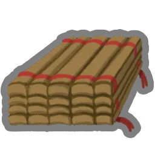
If you do not play any Attacks during your turn, gain an additional 1 ● next turn.
At the start of each combat, apply 1 Vulnerable to ALL enemies.
At the start of each combat, draw 2 additional cards.
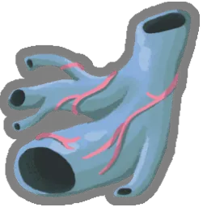
You cannot lose more than 20 HP in a single turn.
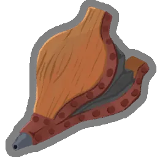
The first Hand you draw each combat is Upgraded.
While you have no Potions, you have 2 additional Dexterity.
At the start of each combat, heal 2 HP.
Every 5 cards you add to your Deck, heal 20 HP.
Gain 25% additional Gold.
At the start of your first turn, lose 2 ●. At the start of all other turns, gain 1 ●.
Start each combat with 3 Thorns.
The first time each combat you Exhaust a Skill, add a copy of it into your Hand.
At the start of your 2nd turn, gain 2 ●.
At the start of your 3rd turn, gain 18 Block.
Upon pickup, brews 5 random Potions.
The first time you lose HP each combat, draw 3 cards.
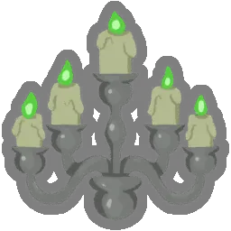
At the start of your 3rd turn, gain 3 ●.
The effects of your cost X cards are increased by 2.
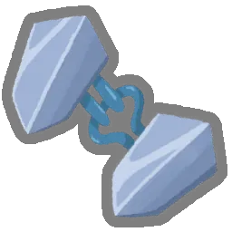
At the end of your turn, gain 1 Block for each card in your Hand.
Card rewards can now contain Colorless cards.
Upon pickup, obtain an additional copy of a card in your Deck.
Whenever you gain Gold, raise your Max HP by 1.
For every 5 cards in your Deck, heal 3 HP whenever you enter a Rest Site.
At the start of each combat, deal 9 damage to ALL enemies.
Whenever you add a card that gains Block to your Deck, Enchant it with Nimble 2.
Whenever you add a Power into your Deck, Upgrade it.
At the start of each combat, discard any number of cards then draw that many.
Whenever you play a Power, draw 1 card.
Strikes and Defends gain Ethereal.
You can now gain Strength at Rest Sites. (3 times max)
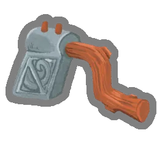
Upon pickup, Enchant up to 3 Attacks with Sharp 3.
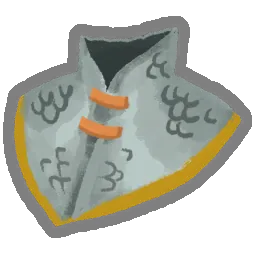
At the start of each combat, gain 4 Plating.
Whenever an enemy dies, gain 1 ● and draw 1 card.
Every 3 turns, gain 1 ●.
At the start of your 2nd turn, gain 14 Block.
Energy is now conserved between turns.
Whenever you play a card that costs 2 ● or more, gain 4 Block.
Every 5 times you Exhaust a card, draw 1 card.
Regular enemy combats are no longer encountered in ? rooms.
Upon pickup, Enchant up to 3 cards with Adroit.
Every time you play 3 Attacks in a single turn, gain 1 Dexterity.
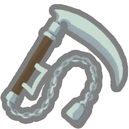
Every time you play 3 Attacks in a single turn, deal 6 damage to a random enemy.
Start each combat with an additional 1 ●.
Every other combat, your card rewards gain an additional Power.
At the end of combat, Upgrade all card rewards if you took no damage.
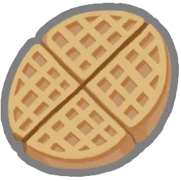
Upon pickup, raise your Max HP by 7 and heal all of your HP.
Every time you play 3 Skills in a single turn, deal 5 damage to ALL enemies.
When your HP would be reduced to 0, heal to 50% of your Max HP instead (works once).
Upon pickup, raise your Max HP by 31.
Whenever you add a card to your Deck, gain 15 Gold.
Upon pickup, raise your Max HP by 14.
Whenever you enter a shop room, heal 15 HP.
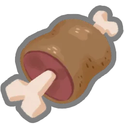
If your HP is at or below 50% at the end of combat, heal 12 HP.
50% discount on all products!
At the start of your turn, deal 3 damage to ALL enemies.
Upgraded Attacks deal 3 additional damage.
You may choose any number of options at Rest Sites.
Whenever you add an Attack card to your Deck, Upgrade it.
Whenever you play a Power, a random card in your Hand is free to play that turn.
Enchanted Attacks deal 9 additional damage.
Every time you play 10 Attacks, gain 1 ●.
Start each combat with 1 Dexterity.
Upon pickup, gain 300 Gold.
If you end your turn without Block, gain 6 Block.
Every time you play 3 Attacks in a single turn, gain 4 Block.
Upon pickup, gain 5 card rewards.
At the start of each Boss combat, heal 25 HP.
If you end a turn with at least 10 Block, deal 6 damage to a random enemy.
Upon pickup, raise your Max HP by 10.
Every 10th Attack you play deals double damage.
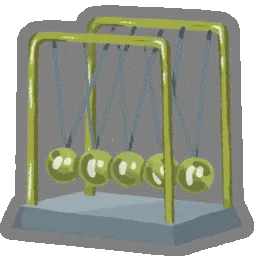
Every 3 turns, draw 1 card.
The first time you play a Power each combat, gain 7 Block.
At the start of each combat, procure a Potion-Shaped Rock.
Whenever you enter a ? room, heal 5 HP.
Whenever you play 3 or fewer cards during your turn, draw 3 additional cards at the start of your next turn.
Upon pickup, gain 2 potion slots.
Normal enemies drop an additional card reward.
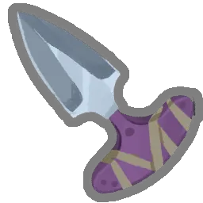
Upon pickup, Enchant an Attack with Momentum 5.
The first time you play an Attack, Skill, and Power each turn, gain 1 Strength and 1 Dexterity.
Every time you play an Attack or Skill, Upgrade it for the remainder of combat.
At the start of each combat, apply 1 Weak to ALL enemies.
Whenever you Rest, heal an additional 15 HP.
Whenever you use a potion, gain 3 Strength this turn.
Retain your Hand on the first turn of combat.
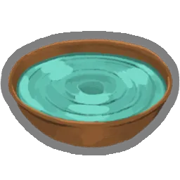
If you did not play any Attacks during your turn, gain 4 Block.
Upon pickup, choose an Attack or Skill in your Deck to Enchant with Royally Approved.
If you end your turn with no cards in your Hand, deal 20 damage to ALL enemies.
You can now dig at Rest Sites to obtain a random Relic.
Every time you play 3 Attacks in a single turn, gain 1 Strength.
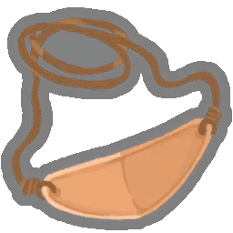
Start each Elite combat with 2 Strength.
At the start of your 3rd turn, gain 1 Strength and 1 Dexterity.
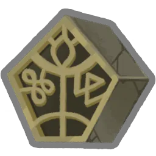
At the end of turn 7, deal 52 damage to ALL enemies.
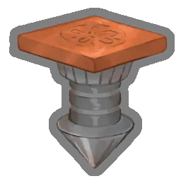
At the start of each combat, Upgrade 2 random cards in your Draw Pile for the rest of combat.
Upon pickup, raise your Max HP by 7.
Cards containing “Strike” deal 3 additional damage.
Up to 10 Block persists across turns.
Whenever you shuffle your Draw Pile, gain 6 Block.
The merchant no longer runs out of cards, relics, or potions and his prices are reduced by 20%.
Whenever you Rest, procure 2 random Potions.
At the start of each combat, choose 1 of 3 random Colorless cards and add the chosen card into your Hand.
Whenever you add a Skill into your Deck, Upgrade it.
Whenever you would lose HP, lose 1 less.
Every time you play 10 Skills, gain 7 Block.
Whenever you have no cards in Hand during your turn, draw a card.
Each combat, the first time you play a card that Debuffs an enemy, double its effect.
Start each combat with 1 Strength.
The first time you gain Block from a card each combat, double the amount gained.
Whenever you enter a Rest Site, start the next combat with an additional 2 ●.
Start each combat with an additional 4 ●.
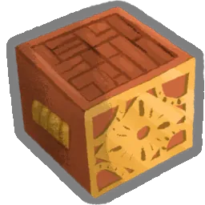
At the start of each combat, add a random card into your Hand. It's free to play this turn.
Upon pickup, Upgrade 2 random Skills.
Upon pickup, Upgrade 2 random Attacks.
Potions always appear in combat rewards.
Elites drop an additional Rare card reward.
A random card in each card reward is Enchanted with Swift 1.
The Ironclad (8)

At the start of your turn, gain 2 Strength and ALL enemies gain 1 Strength.

At the end of combat, heal 6 HP.

Whenever you Exhaust a card, deal 3 damage to ALL enemies.

The first time you lose HP on your turn, heal HP equal to the amount lost.

Enemies with Vulnerable take 75% more damage rather than 50%.

While your HP is at or below 50%, you have 3 additional Strength.

The first time you gain Strength each combat, double the amount gained.

Whenever you lose HP in combat, gain 3 Block next turn.
The Silent (8)

Whenever you play a Shiv, gain 1 Dexterity this turn.

At the start of each combat, add 3 Shivs into your Hand.

Enemies with Weak deal 40% less damage to you rather than 25%.

At the start of each combat, draw 2 additional cards.

Whenever you apply Poison, apply an additional 1 Poison.

Whenever you discard a card during your turn, deal 3 damage to a random enemy for each card discarded.

Whenever you discard a card during your turn, gain 3 Block.

At the start of each combat, apply 4 Poison to ALL enemies.
The Defect (8)

At the start of each combat, Channel 1 Lightning.

Start each combat with 1 Focus.

If you lost HP during the previous turn, trigger the passive ability of all Orbs at the start of your turn.

Your rightmost Orb triggers its passive an additional time.

The first time you Channel 7 Orbs each combat, deal 30 damage to ALL enemies.

At the start of each combat, add 2 zero-cost cards from your Draw Pile into your Hand.

Start each combat with 3 additional Orb Slots.

At the start of each combat, Channel 1 Dark.
The Regent (8)
At the start of each combat, gain 3 ★.
At the start of each combat, Forge 10.
For every 10 ★ spent, gain 10 Block.
At the end of your turn, gain 1 ★.
The first time you spend ★ each turn, gain 1 Strength.
At the start of each combat, add 2 random Colorless cards into your Hand.
The first time you create a card each turn, gain 4 Block.
Cards containing “Minion” deal double damage and gain double Block.
The Necrobinder (8)

At the start of each combat, add 2 random Ethereal cards into your Hand.

Whenever Osty attacks, gain 2 Block.

Whenever a non-Minion enemy dies to Doom, heal 3 HP.

At the end of each turn, lower the cost of a random Retained card by 1 until played.

At the start of your turn, Summon 1.

At the start of each combat, add 3 Souls into your Draw Pile.

Whenever you play a card that costs 3 ● or more, gain 1 ●.

Enemies with at least as much Doom as HP deal 50% less damage.
Event (139)
Upon pickup, gain 4 potion slots filled with random Potions.
Upon pickup, obtain a random Rare Card to add to your Deck.
Upon pickup, Transform a starter card into an ancient version.
Upon pickup, Transform 3 cards, then Upgrade them.
Upon pickup, Enchant 4 random cards in your Deck with Swift 2.
Upon pickup, raise your Max HP by 20. At the start of each combat, draw 2 fewer cards.
Upon pickup, remove 4 cards from your Deck. Whenever you shuffle your Draw Pile, add a Soot into your Draw Pile.
Whenever you add a card to your Deck, add one additional copy.
At the end of combat, heal 12 HP.
Elites drop an additional Relic when defeated.
Gain 1 ● at the start of each turn. At the start of each combat, shuffle 3 Dazed into your Draw Pile.
Upon pickup, add 1 Enthralled to your Deck. Gain 1 ● at the start of each turn.
At the start of the next combat, Upgrade your starting hand.
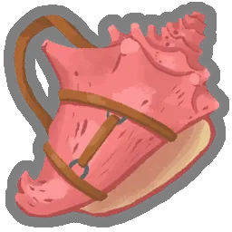
At the start of Elite combats, draw 2 additional cards and gain 1 ●.
The 5th card you play from your hand each turn is free.
Upon pickup, gain the card Byrd Swoop. A Byrdpip will accompany you in battles.
Upon pickup, obtain a unique Curse and 3 Relics.
At the start of each combat, add 1 of 5 random cards into your Hand. Add Retain to the chosen card.
At the end of combat, gain 1 Max HP.

Upon pickup, Transform up to 6 cards into Maul.

At the start of your turn, add a random Attack into your Hand. It's free to play this turn.
Upon pickup, receive Greed. Gain 333 Gold.
Whenever you obtain a Curse, raise your Max HP by 6.
Whenever you play an Attack, gain 1 Block.
At the start of each combat, fill all empty potion slots with random Potions.
Start combat with 20 Block. Your Block is not removed at the start of your 2nd turn.
Upon pickup, add 2 random Curses and 3 Apparitions to your Deck.
At the start of each combat, gain 7 ★.
Upon pickup, add 1 Dowsing to your Deck.
Whenever you Rest, you may add a card to your Deck.
You may reroll each card reward once.
Upon pickup, obtain an Ancient Card.
You can no longer gain Gold. Gain 1 ● at the start of each turn.
Upon pickup, Enchant a Skill with Imbued.
At the start of the next 5 combats, gain 2 Strength.
Upon pickup, remove 2 cards from your Deck.
Start each combat with 4 Block.
At the start of each combat, heal 1 HP.
Every 5 turns, gain 1 ●.
Upon pickup, heal 10% of your HP.
Upon pickup, raise your Max HP by 3.
Poor imitation. Does nothing.
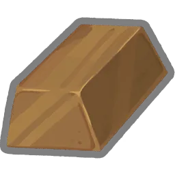
If you end your turn without Block, gain 3 Block.
Start each combat Confused.
Cards containing “Strike” deal 1 additional damage.
Whenever you enter a Rest Site, start the next combat with an additional 1 ●.
At the start of each turn, draw 2 additional cards. You may not draw cards during your turn.
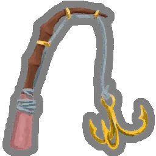
Every 3 normal combats, Upgrade a random card in your Deck.
Whenever you Exhaust a card, deal 1 damage to a random enemy.
Upon pickup, lose 15 HP and Upgrade 2 random cards.
Upon pickup, mark 8 random combats. Enemies in those rooms have 1 HP.
Upon pickup, obtain 2 Common cards, 2 Uncommon cards, and 1 Rare card.
Enchant all card rewards with Glam.
Upon pickup, replace the Act 2 Map with a single special path.
Upon pickup, gain 150 Gold.
Whenever you break an enemy's Block, apply 2 Vulnerable.
Upon pickup, choose 1 of 3 Rare cards to add to your Deck, and add 1 Injury to your Deck.
At the start of your turn, play a copy of your last played Attack.
At the start of each combat, Channel 3 Lightning. Lightning deals 1 additional damage.

Every 4 cards you play, draw 1 card.
At the start of each combat, put a random Power from your Draw Pile into your Hand. It's free to play this combat.
Upon pickup, add 1 Apotheosis to your Deck.
Upon pickup, obtain 2 card rewards from other characters.
Upon pickup, obtain 2 random Relics. Add an additional Strike and Defend to your Deck.
The Act 1 Boss drops 2 Relics.
Upon pickup, choose 1 of 2 Colorless cards to add to your Deck.
Upon pickup, Transform 1 of your Strikes and 1 of your Defends and lose 12 Max HP.
When you encounter the Merchant, immediately obtain EVERYTHING he sells.
Upon pickup, gain 1 card reward and procure 1 random potion.
Whenever you play a Power, deal 8 damage to ALL enemies.
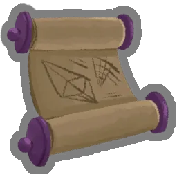
Upon pickup, choose 1 of 3 Multiplayer Cards to add to your Deck.
Whenever you climb a floor, gain 12 Gold. No longer works when you spend any Gold at the shop.

You may Cook at Rest Sites.
At the start of your turn, deal damage equal to the turn number to ALL enemies.
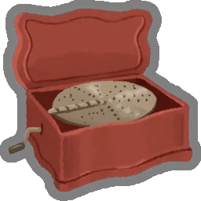
Create an Ethereal copy of the first Attack you play each turn.
Upon pickup, gain 2 random Neow Relics. Add 1 random Curse to your Deck.
Upon pickup, procure 1 Ambergris and add 1 Guilty to your Deck.
Upon pickup, Upgrade 1 of your Strikes and 1 of your Defends.
Upon pickup, add 1 Neow's Fury to your Deck.
Upon pickup, Transform 1 card.
Upon pickup, raise your Max HP by 11.
Upon pickup, Enchant all Strikes in your Deck with Tezcatara's Ember.
At the start of your turn, draw 1 additional card.
Upon pickup, Enchant all Defends with Goopy.
The first time each combat you end your turn without playing cards, Exhaust your Hand, and take an extra turn.
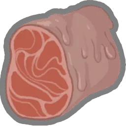
Gain an additional 1 ● at the start of your 3rd turn, and every turn after that.
Upon pickup, Enchant a card with Clone.
Upon pickup, add 2 Relax to your Deck.
Doubles Block gained from a card, then goes to sleep for 2 turns.
If you end your turn with unspent ●, gain an additional 2 ● next turn.
Upon pickup, remove 5 cards from your Deck. After each combat, randomly add 1 back Upgraded.
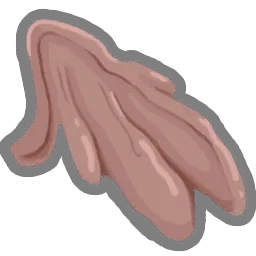
You may sacrifice card rewards to Pael. Every 2 sacrifices, obtain a Relic.
Transform ALL Strikes and Defends.
Upon pickup, gain 1 potion slot and procure 2 random Potions.
Gain 1 ● at the start of each turn. ALL enemies start combat with 1 Strength.
At the start of each combat, Summon 5. At the start of your turn, Summon 2.
Every 4 turns, draw 2 additional cards.
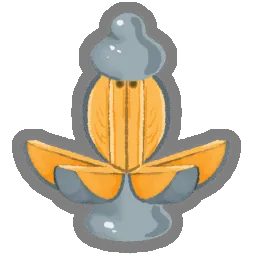
Upon pickup, Upgrade a card.
Upon pickup, remove 2 cards from your Deck and lose 16 HP.
Upon pickup, remove 1 card from your Deck.
Upon pickup, remove 3 cards from your Deck. Add Folly to your Deck.
Gain 1 ● at the start of each turn. Card rewards now contain cards from other colors.
Gain 1 ● at the start of each turn. Extinguishes after 5 combats. Can be Kindled at Rest Sites.
At the start of each combat, add 1 Luminesce into your Hand.
At the start of your first 3 turns, draw 2 additional cards.
At the start of each combat, lose 4 HP.
At the end of your turn, you no longer discard your Hand.

At the start of your turn, gain 7 Block.
Upon pickup, Upgrade 6 random cards.
Upon pickup, choose 1 of 2 packs of cards to add to your Deck.
See 15 cards from another character. Choose any number of them to add to your Deck.
At the start of your turn, spend 3 Gold to gain 1 ●.
Upon pickup, lose 9 Max HP. Add 3 Wishes to your Deck.
Upon pickup, gain 888 Gold.
Upon pickup, lose all Gold. Enchant all cards in your first card reward with Glam.
The first 3 card rewards you see are Upgraded. The first Treasure Chest you open is empty.
Upon pickup, obtain a random Relic.
At the start of your turn, draw 2 additional cards. Start each combat Confused.
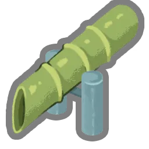
Gain 1 ● at the start of each turn. You can no longer obtain Potions.

Gain 1 ● at the start of each turn. Powers cost 1 more ●.
Whenever you Rest at a Rest Site, raise your Max HP by 5.
Upon pickup, add 1 Brightest Flame to your Deck.
Start each combat with 3 Strength.
Transforms into a powerful Relic after defeating 5 Elites.

Upon pickup, add 1 Whistle to your Deck.
At the start of the next combat, shuffle 2 Dazed into your Draw Pile.
Whenever you would deal 4 or less unblocked attack damage, increase it to 5.

The first card you play each combat is played an extra time.
At the start of your turn, Exhaust 1 card from your Hand and gain 1 Strength.
Upon pickup, replace your starter Relic with an Ancient version.
Upon pickup, obtain 5 Wax Relics. Every 3 combats, your left-most Wax Relic will melt away.

Choose 3 Attacks in your Deck. Enchant them with Instinct.
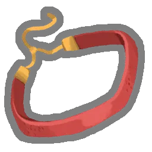
Gain 1 ● at the start of each turn. You cannot play more than 6 cards per turn.

Whenever you kill an Elite, Upgrade 4 random cards.
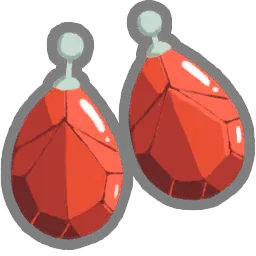
Gain 1 ● at the start of each turn. Vakuu plays your first turn for you.
You may ignore paths when choosing the next rooms to travel to 3 times.
Does nothing.
Receive 3 random Relics after 5 combats.
Upon pickup, Upgrade 4 cards.
Fallback (1)
It's a circlet.